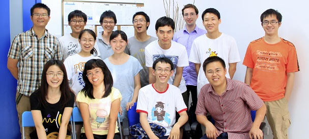

| Latest Publication |
Bei-Bei Li, William R. Clements, Xiao-Chong Yu, Kebin Shi, Qihuang Gong, and Yun-Feng Xiao, "Single nanoparticle detection using split-mode microcavity Raman lasers," PNAS 111(41), 14657-14662 (2014). Highlighted in Phys. org, Asian Scientist, and AZO nano
|
| Xiao-Chong Yu, Bei-Bei Li, Pan Wang, Limin Tong, Xue-Feng Jiang, Yan Li, Qihuang Gong, and Yun-Feng Xiao, "Single Nanoparticle Detection and Sizing Using a Nanofiber Pair in Aqueous Environment," Advanced Materials 26(44), 7462-7467 (2014). Front cover paper, highlighted in Materials Views, AZO nano |
Yong-Chun Liu, Xingsheng Luan, Hao-Kun Li, Qihuang Gong, Chee Wei Wong, and Yun-Feng Xiao, "Coherent polariton dynamics in coupled highly-dissipative cavity quantum electrodynamics,"Phys. Rev. Lett. 112(21), 213602 (2014). Highlighted in Phys. org, Photonics Online |
Linbo Shao, Li Wang, Wenjie Xiong, Xue-Feng Jiang, Qi-Fan Yang, and Yun-Feng Xiao, "Ultrahigh-Q, largely deformed microcavities coupled by a free-space laser beam," Appl. Phys. Lett. 103(12), 121102 (2013).
|
| Yun-Feng Xiao, Xue-Feng Jiang, Qi-Fan Yang, Li Wang, Kebin Shi, Yan Li, and Qihuang Gong, "Tunneling-induced transparency in a chaotic microcavity," Laser & Photonics Reviews 7(5), L51-L54 (2013). |
Welcome to Yun-Feng Xiao research group at Peking University. This group was established in Feb. 2009, also belonging to the State Key Laboratory for Artificial Microstructure and Mesoscopic Physics. Research in this group is centered around optical microresonators (or namely, microcavities), including both theory and experiment.
The optical microresonators support whispering gallery modes (WGMs), offer long photon storage times described by ultrahigh Q factors and open a myriad of lab-on-chip applications ranging from fundamental physics to various photonics applications, such as cavity quantum electromagetic dynamics, cavity quantum optomechancis, nonlinear optics, low-threshold microlasing, bio/chemical sensing, and microcomb.
